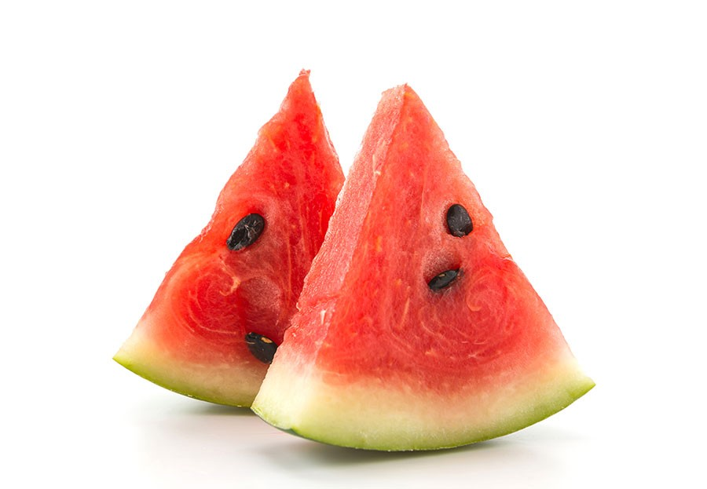
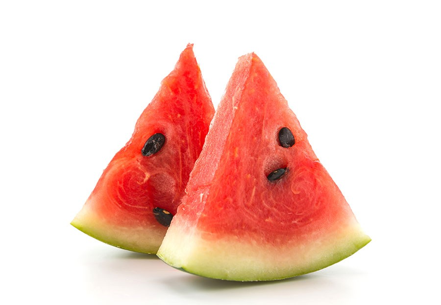

Hi! I'm Brayden Sterling, a 15-year-old graphic and web designer passionate about creating beautiful and functional designs. I enjoy experimenting with new styles, learning the latest web technologies, and bringing creative ideas to life. Whether I'm working on digital art or coding a new website, I love sharing my creations with others. Thanks for stopping by to learn more about me!
I'm pretty athletic, and I like sports, mainly soccer, track and field, and maybe some tennis. Working on graphics is pretty fun and I enjoy working on websites a lot, and also making logos like I did in the past. But overall I like the class, and think coding and designing is fun.
For my About Me page, I wrote two short paragraphs that describe who I am, my interests, and my skills in graphic design and web design. I styled each paragraph section with different background colors to make the text stand out but still look clean. I also included several images (like a city, watermelon, and a forest) and used CSS to round their corners and give them a nice, modern look. I built my navigation bar at the top with styled links that act like buttons. I added hover states in the CSS so the buttons change color when the mouse moves over them. This makes the page more interactive and easy to navigate. That's overall what I completed.